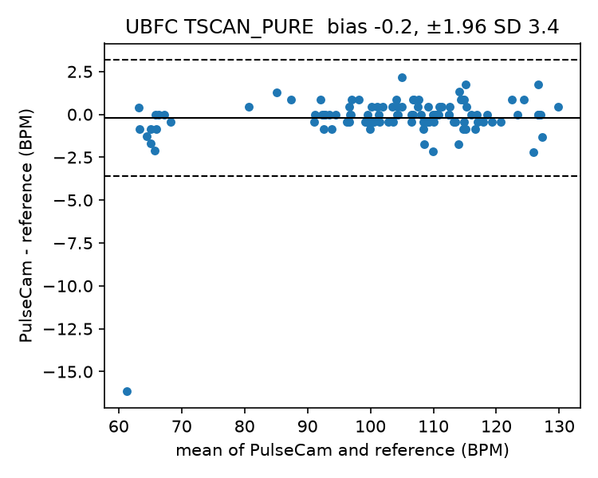
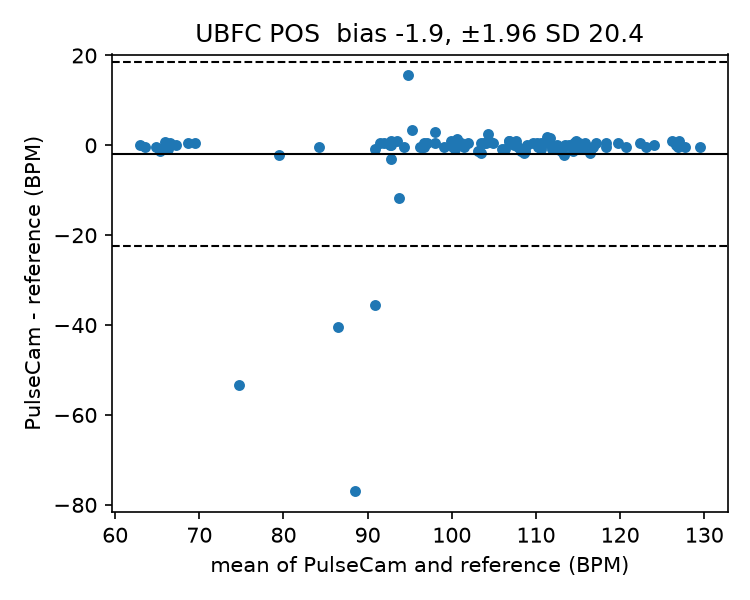

Shri Ramswaroop Memorial University
PROJECT-II (UCS7702PJ)
Project Synopsis
Contactless Heart-Rate and Pulse-Waveform Estimation from Webcam Face Video using Deep Learning (rPPG)
| Submitted by | ||
|---|---|---|
| 1. | Ruchi Singh | 202310101150025 |
| 2. | Aryan Singh | 202310101150038 |
| 3. | Ananya Dwivedi | 202310101150039 |
| Course | B.Tech CS (DS + AI) |
| Semester | VII |
| Group | 71, 72 |
| Subject | PROJECT-II (UCS7702PJ) |
| Faculty | Er. Arun Maurya |
| Date | November 2026 |
Research prototype. PulseCam is not a medical device and must not be used for diagnosis or treatment decisions.
We hereby declare that the project synopsis entitled “PulseCam: Contactless Heart-Rate and Pulse-Waveform Estimation from Webcam Face Video using Deep Learning (rPPG)”, submitted for PROJECT-II (UCS7702PJ), B.Tech CS (DS + AI), Semester VII, Shri Ramswaroop Memorial University, is a record of our own work carried out under the guidance of Er. Arun Maurya.
The results reported here were produced by the code in our project repository. Where we use the released models and datasets of other researchers (rPPG-Toolbox, UBFC-rPPG, PURE, SCAMPS), they are cited in the references. Experiments that could not be completed because they need volunteer recordings are marked as pending, and no results are claimed for them.
| Ruchi Singh 202310101150025 | Aryan Singh 202310101150038 | Ananya Dwivedi 202310101150039 |
We thank our faculty guide, Er. Arun Maurya, for his guidance and for reviewing the direction of this project, and Shri Ramswaroop Memorial University for the opportunity to carry out it as part of PROJECT-II. We are grateful to the researchers who made their work openly available: the authors of the UBFC-rPPG, PURE and SCAMPS datasets and of the rPPG-Toolbox, on which our evaluation is built. The project uses only free and open-source tools, which made it possible to complete it with no budget.
PulseCam estimates a person's resting heart rate (beats per minute, BPM) and pulse waveform from ordinary webcam video of the face, in real time and without touching the person. It uses remote photoplethysmography (rPPG): each heartbeat slightly changes how much light the facial skin absorbs, and a 30 fps camera can record this tiny periodic colour change. The system detects the face, extracts skin regions, passes them through either a classical signal-processing method or a deep neural network (TS-CAN), band-pass filters the result to 0.7–3.0 Hz and reads the heart rate from the strongest frequency. We compare four classical methods (GREEN, ICA, CHROM, POS) with deep models on the public UBFC-rPPG dataset, study cross-dataset transfer, and plan robustness and skin-tone tests on volunteers. A local web application provides a 30-second live measurement and a video-upload mode. On all 42 UBFC-rPPG subjects the TS-CAN model reaches a mean absolute error of 1.80 BPM (best classical baseline, CHROM: 2.00 BPM).
Keywords: remote photoplethysmography, heart rate, TS-CAN, deep learning, computer vision, skin-tone fairness, UBFC-rPPG.
Heart rate is normally measured by contact: a finger clip, chest strap or smartwatch. Contact sensors are inconvenient for long monitoring, for infants and for tele-consultation, where only a camera is available. rPPG removes the sensor and needs only a camera that most people already own.
With every heartbeat the volume of blood in the small vessels under the skin rises and falls. Haemoglobin absorbs light, and it absorbs green light most strongly, so more blood means slightly less reflected light. The average colour of the face therefore oscillates by a fraction of a percent at the heart rate. At rest the frequency lies between about 0.7 Hz and 3.0 Hz (42–180 BPM). A camera recording at 30 frames per second samples this signal well above the Nyquist rate (the heart-rate band ends at 3 Hz, far below 15 Hz).
A camera-only measurement needs no sensor to wear, charge or sterilise, suits tele-consultation (as a wellness indicator, not a diagnosis), and is an active research problem that combines computer vision and signal processing.
The pulse signal is tiny compared with everything else that changes the face colour in a video: head movement, speech, changing room light, camera auto-exposure and video compression. Classical methods try to cancel these effects with hand-designed colour mathematics. Deep-learning methods learn to separate pulse from noise directly from data, but they are trained on public datasets dominated by lighter skin tones, and melanin-rich skin gives a weaker signal because melanin absorbs part of the light. How well such models work for Indian users is therefore not well tested. PulseCam builds a complete, working rPPG pipeline, evaluates it honestly and sets up the tests needed to answer this fairness question.
To design, implement and evaluate a low-cost, camera-only system that estimates resting heart rate and pulse waveform from live face video with an error below 5 BPM on still, well-lit clips, and to find out how its accuracy changes with movement, talking, dim light and skin tone, using only free software and a standard webcam (budget ₹0).
| RQ | Question | Experiment |
|---|---|---|
| RQ1 | Does a deep model beat the classical baselines (GREEN, ICA, CHROM, POS) on UBFC-rPPG? | E1 |
| RQ2 | How much does accuracy drop when the model is trained on one dataset (PURE or SCAMPS) and tested on another (UBFC)? | E2 |
| RQ3 | Is accuracy lower for darker skin tones, and does fine-tuning on own recordings reduce the gap? | E4 |
| RQ4 | Which condition (movement, talking, dim light) hurts accuracy most? | E3 |
In scope:
Out of scope:
rPPG was first shown with ordinary ambient light and a consumer camera by Verkruysse et al. (2008). The methods used in this project are summarised below.
| Method | Type | Key idea |
|---|---|---|
| GREEN | Classical | Band-pass the mean green channel of the face (Verkruysse et al., 2008). Simple; no motion handling. |
| ICA | Classical | Blind source separation of the R, G, B traces to isolate the pulse (Poh et al., 2010). |
| CHROM | Classical | Fixed chrominance combination of R, G, B that cancels specular reflection and motion (de Haan & Jeanne, 2013). |
| POS | Classical | Projects colour onto the plane orthogonal to the skin-tone vector; the usual strong classical baseline (Wang et al., 2017). |
| DeepPhys | Deep | Attention-based CNN using frame differences as the motion representation (Chen & McDuff, 2018). |
| PhysNet | Deep | 3-D CNN that predicts the pulse waveform from a video clip (Yu et al., 2019). |
| TS-CAN | Deep | Efficient temporal-shift attention network for on-device use; takes 72×72 frame differences and predicts the derivative of the pulse (Liu et al., 2020). Used in this project. |
| PhysFormer | Deep | Transformer backbone for rPPG (Yu et al., 2022). |
Datasets. UBFC-rPPG (Bobbia et al., 2019): 42 short, well-lit videos with finger-clip PPG ground truth; used for E1 and as the E2 test set. PURE (Stricker et al., 2014): real video with controlled motion. SCAMPS (McDuff et al., 2022): large synthetic, avatar-rendered dataset. Toolbox. rPPG-Toolbox (Liu et al., 2023) provides consistent implementations, released checkpoints and evaluation code; the project reuses it instead of re-implementing models.
Gap. Public datasets contain few darker-skinned and Indian volunteers, so reported accuracy may not transfer. The Monk Skin Tone scale (10 shades, developed for fairness evaluation) is used to group volunteers, and PulseCam's E3/E4 experiments are designed to measure this gap.
Let c(t) = (R, G, B) be the average colour of the skin pixels in frame t. A simple model is a constant skin colour plus a small pulse-dependent change and noise:
where p(t) is the pulse (a roughly periodic wave at the heart-rate frequency), a is the strength of the pulse in each colour channel (largest in green), m(t) is motion and lighting change, and n(t) is camera noise. Every rPPG method is a way to recover p(t) while suppressing m and n.
GREEN uses the green channel directly. ICA treats R, G, B as mixtures and separates independent sources, picking the one with the clearest peak. CHROM forms two chrominance signals from normalised colour channels so that specular reflections cancel, then combines them. POS (Plane-Orthogonal-to-Skin), implemented in pulsecam/signal.py, works on short windows of L = 1.6 s (48 frames at 30 fps):
Dividing by the window mean removes the skin tone and brightness; P projects onto the plane orthogonal to the skin-tone direction, where specular and motion changes are small; the σ ratio re-balances the two projections. The windows h are overlap-added over the whole clip to give the pulse signal.
TS-CAN (temporal-shift convolutional attention network) has two branches. The appearance branch looks at the raw face frame and learns an attention mask that says which skin regions carry the pulse. The motion branch looks at the normalised frame difference and uses temporal shift modules, which move part of the feature channels one step forward or back in time so that a 2-D CNN can model time at almost no extra cost. In PulseCam:
The pulse signal is linearly detrended and filtered with a 3rd-order Butterworth band-pass, applied forwards and backwards (zero phase shift), between 0.7 Hz and 3.0 Hz. A Hann window is applied, the signal is zero-padded to a power of two at least 8× its length (frequency steps of about 0.01 Hz, i.e. well under 1 BPM) and its power spectrum is computed with the FFT. The heart rate is read from the strongest peak in the band:
A signal-to-noise ratio (power within ±0.1 Hz of the peak and its second harmonic versus the rest of the band, in dB) is used to warn the user about unreliable measurements.
Figure 1. PulseCam processing pipeline. TS-CAN outputs the derivative of the pulse, which is integrated (cumulative sum) before filtering.
The MediaPipe BlazeFace short-range detector finds the largest face in each frame. The box is smoothed over time (exponential smoothing, factor 0.6) so that small detector jitter does not move the measurement area.
Three skin regions of interest (ROIs) are taken as fixed fractions of the face box: the forehead (flat, rarely moves with speech) and both cheeks (large, well-perfused skin).
The mean RGB over the three ROIs gives one colour sample per frame for the classical methods (POS and the others). For TS-CAN a square crop around the face, enlarged 1.5× and resized to 72 × 72, is used instead, matching the toolbox's preprocessing.
The live demo keeps a rolling 10-second buffer (300 frames). Once per second a new estimate is computed on the most recent 10 seconds (resampled to a uniform 30 fps) and the median of the last five estimates is shown, which suppresses single wrong peaks. Warnings are shown when the face moves too much (Hold still), the face is too dark (Too dark), the SNR is below −3 dB (Weak signal) or no face is found.
| # | Train | Test | Answers |
|---|---|---|---|
| E1 | Released TS-CAN weights + four classical methods | UBFC-rPPG (42 subjects) | RQ1 |
| E2 | PURE or SCAMPS | UBFC-rPPG | RQ2 |
| E3 | Best of E1/E2 | Own clips: still, moving head, talking, dim light | RQ4 |
| E4 | Best model, before / after fine-tuning | Own clips grouped by Monk skin-tone band | RQ3 |
| E5 | Final model | 1-minute live sessions vs a reference device | Demo reliability |
Team targets: beat every classical baseline on E1; mean absolute error below 5 BPM on still, well-lit clips.
For N windows with predicted heart rate pi and reference ti (BPM):
MAE is the main metric; RMSE punishes large errors more, Pearson r shows whether predictions follow the reference, and a Bland–Altman plot shows the bias and the limits of agreement (bias ± 1.96·SD), the standard way to compare two measuring methods.
PulseCam is a small Python application. The browser captures the webcam, the server does all the processing locally and nothing is sent to the internet.
Figure 2. Architecture of the local web application.
The pulsecam package holds the face tracker, signal processing (POS, band-pass, detrend, FFT), TS-CAN inference, the live HRTracker and the metrics; eval/ holds the experiment scripts and toolbox_patch/ a loader that lets the rPPG-Toolbox read own recordings with a person-wise split. Two engineering decisions matter most: the browser streams raw, uncompressed frames (a lossy re-encode of one UBFC clip made POS read 62 BPM instead of 107 BPM), and TS-CAN runs in a background thread, because one estimate takes 2.5–4 s on a laptop CPU, so capture stays at 20–25 fps.
| Dataset | Type | Content and use in PulseCam |
|---|---|---|
| UBFC-rPPG | Real | 42 videos of seated, mostly still people in indoor light, with finger-clip PPG ground truth. Used for E1 (all methods) and as the test set of E2; also for the person-wise fine-tuning study (30 train / 6 validation / 6 test people). |
| PURE | Real | Videos with controlled head-motion tasks. Its toolbox-released TS-CAN checkpoint is used in E1/E2; the data itself was not downloaded. |
| SCAMPS | Synthetic | Avatars rendered with simulated pulse. Its released TS-CAN checkpoint is used in E2; the data itself was not downloaded. |
| Own recordings | Real | 15–20 consenting volunteers with a spread of Monk skin-tone shades, four 1-minute clips each (planned, see 10.2). |
After written consent, each volunteer (ID P01, P02, …; names never used in files) rests for 2 minutes and records four 1-minute clips at 30 fps about 1 m from the camera: still, slow head movement, talking and dim light. Camera filters are turned off and files are never re-encoded. A reference heart rate (pulse oximeter, smartwatch or a 60-second manual count) is logged for every clip, together with the Monk skin shade, age group and glasses in a private metadata file.
| Category | Items (all free; total budget ₹0) |
|---|---|
| Languages / libraries | Python, PyTorch, NumPy, SciPy, OpenCV, MediaPipe, Starlette / uvicorn |
| Framework | rPPG-Toolbox (released PURE and SCAMPS TS-CAN checkpoints, preprocessing, evaluation) |
| Datasets | UBFC-rPPG, PURE, SCAMPS (public); own volunteer recordings (private) |
| Compute | Student laptop (CPU) for the demo; Google Colab free GPU for evaluation and fine-tuning |
| Hardware | Standard 30 fps webcam; pulse oximeter or smartwatch as heart-rate reference (for E3–E5) |
| Other | Git / GitHub (private repository); written consent forms for volunteers |
The pipeline, evaluation scripts, toolbox patch (a loader for own recordings) and the web demo are implemented and tested. E1 and E2 are complete on all 42 UBFC-rPPG subjects: every 10-second window (step 5 s; 490 windows per method) was scored against the heart rate of the ground-truth PPG in the same window.
| Method | MAE (BPM) | RMSE (BPM) | Pearson r | MAE per video, median (BPM) |
|---|---|---|---|---|
| GREEN | 19.38 | 29.97 | 0.28 | 16.77 |
| ICA | 6.73 | 15.85 | 0.72 | 3.65 |
| POS | 4.50 | 12.94 | 0.79 | 2.57 |
| CHROM | 2.00 | 6.03 | 0.94 | 0.72 |
| TS-CAN (trained on PURE) | 1.80 | 6.80 | 0.93 | 0.72 |
| TS-CAN (trained on SCAMPS) | 12.83 | 22.84 | 0.50 | 8.94 |
TS-CAN clearly beats GREEN, ICA and POS and narrowly edges out CHROM on window MAE (1.80 vs 2.00 BPM). The two are tied per video (0.72) and CHROM has slightly higher correlation (0.94 vs 0.93), so the margin is small. An earlier run on only 10 subjects had shown a larger gap (0.70 vs 1.08 BPM), which turned out to be an effect of which subjects were in the sample. The target “MAE < 5 BPM on still, well-lit clips” is comfortably met. For ICA, POS and TS-CAN, RMSE is much larger than MAE: a few windows where the method locks onto a wrong frequency dominate the error.


Figure 3. Bland–Altman plots on UBFC-rPPG (490 windows): TS-CAN trained on PURE (left, bias −0.8 BPM) and POS (right). Most points of TS-CAN lie on the zero line; the wide limits of agreement are caused by a handful of outlier windows.
A TS-CAN model trained on real video (PURE) transfers well to UBFC (1.80 BPM), but the same model trained on synthetic SCAMPS does not (12.83 BPM). To check whether this was only a scoring problem, the same face crops were re-scored five different ways, including the toolbox's own preprocessing and post-processing: SCAMPS stayed 6–8 times worse than PURE under every variant (8.6–14.1 vs 1.3–2.0 BPM). The released SCAMPS-trained checkpoint genuinely transfers poorly to real UBFC video; it is not mainly a bug in our scoring.
Starting from the released PURE weights, TS-CAN was fine-tuned with a person-wise split (30 train, 6 validation, 6 test people). With learning rate 5e-6 for 3 epochs the test MAE moved from 1.60 to 1.58 BPM per window (0.89 to 0.85 per video); with 5e-5 for 6 epochs the model overfitted (validation MAE rose from 1.58 to 2.04–2.97). A 0.02 BPM change is noise, so no gain is claimed and the released PURE weights remain the demo's default model; a real gain would have to come from own recordings with other skin tones (E4).
E3, E4 and E5 (and therefore RQ3 and RQ4) need volunteer recordings, signed consents and a reference device. They are not yet collected, and no result is claimed for them.
Six automated unit tests (pytest) check the FFT heart-rate estimate, the detrend, POS, the metrics and the no-face case; all pass. End to end, a UBFC clip gave 107.2 BPM against a reference of 106.7 BPM offline, the same 107.2 BPM through the upload page, and converged to ~107 BPM when its frames were streamed over the live WebSocket; a simulated 72 BPM camera in Chrome gave 72 BPM. The own-data loader was checked on synthetic videos (no person in two splits). A live run with a real person at a webcam is not yet verified.
| Risk | Impact | Mitigation |
|---|---|---|
| Too few volunteers, or too little skin-tone spread | High | Recruit early (family, hostel, classmates); state the sample size honestly; do not claim results for groups with too few people |
| No reference device available | High | Use a cheap oximeter, a smartwatch, or a 60-second manual count; record the method in the metadata |
| Video compression or camera filters hide the pulse | Medium | Record at 30 fps with filters off; never re-encode; stream raw frames in the app |
| Demo fails on the day (lighting, camera) | Medium | Daylight, plain background; pre-recorded backup video; upload mode as an alternative |
python app/server.py).Limitations. Resting, frontal, indoor, single-face, 30 fps video only; UBFC-rPPG is an easy benchmark (still people, good light, uncompressed video); the deep models are the toolbox's released checkpoints; and there are no skin-tone or robustness results yet because no volunteer data has been collected.
Future scope. Collect the volunteer dataset and run E3–E5 with a person-wise fine-tune; test newer models (PhysNet, PhysFormer) through the same toolbox; add respiration rate and heart-rate variability from the same signal; port the demo to a phone browser.
PulseCam shows that a complete contactless heart-rate pipeline can be built with free tools and a standard webcam. On the UBFC-rPPG benchmark it reaches 1.80 BPM window MAE with TS-CAN and meets the target of under 5 BPM on still, well-lit clips. The deep model narrowly beats the best classical method (CHROM, 2.00 BPM) on the headline metric and only ties it elsewhere, so on easy, controlled video a well-tuned classical method is almost as good. The more interesting questions are about harder conditions and different skin tones, for which the experiments and the recording protocol are ready and which need volunteer data to answer.
| # | Phase | Activity | Status |
|---|---|---|---|
| 1 | Study and set-up | Literature review, spec, toolbox installation on Colab, data access | Done (early Oct 2026) |
| 2 | Pipeline and demo | Face/ROI extraction, POS and TS-CAN inference, HR tracker, live demo | Done (Oct 2026) |
| 3 | E1 and E2 | All 42 UBFC subjects, baselines vs deep, cross-dataset transfer, Bland–Altman plots | Done (21–26 Oct 2026) |
| 4 | Fine-tuning | Person-wise UBFC fine-tune; SCAMPS scoring check | Done (no gain) |
| 5 | Web app and report | Local web app, report draft, viva slides | Done (26 Oct 2026) |
| 6 | Own data | Consent forms, reference device, volunteer recordings (Monk bands, four conditions) | Pending – needs volunteers |
| 7 | E3 / E4 / E5 | Robustness, skin-tone and live-vs-reference tests; fine-tune on own data | Pending |
| 8 | Final submission | Final report, weights, backup demo video, viva | Pending |
| Team members | Faculty: Er. Arun Maurya | Head of department |